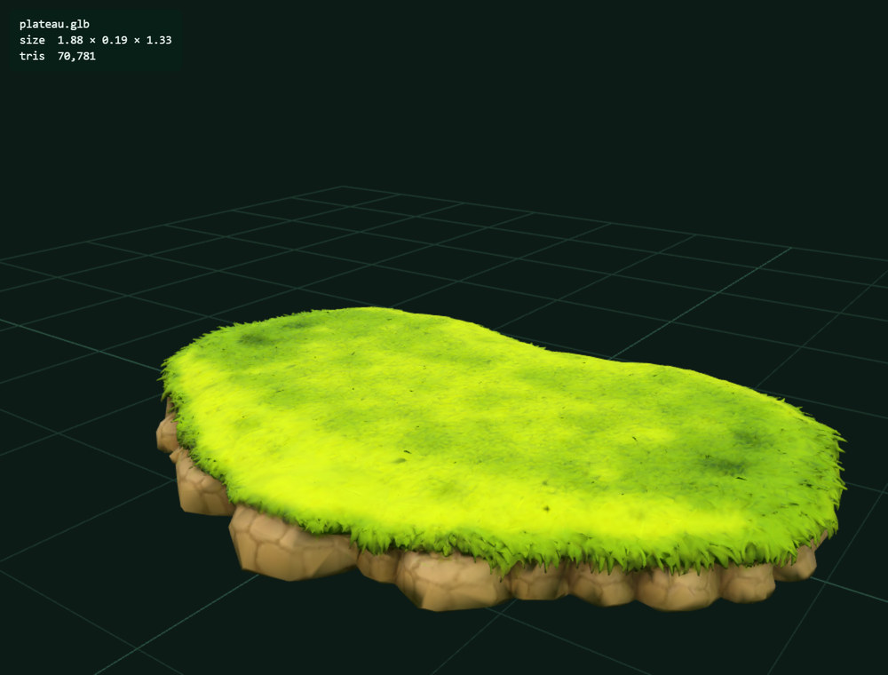
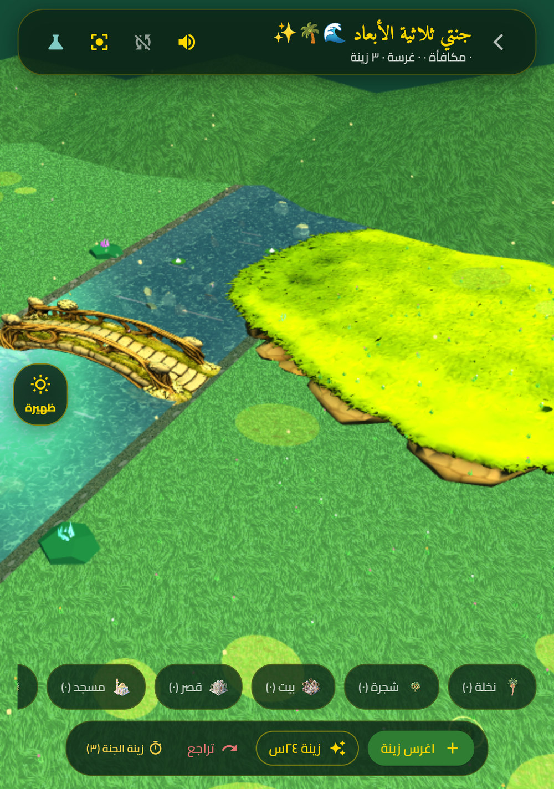
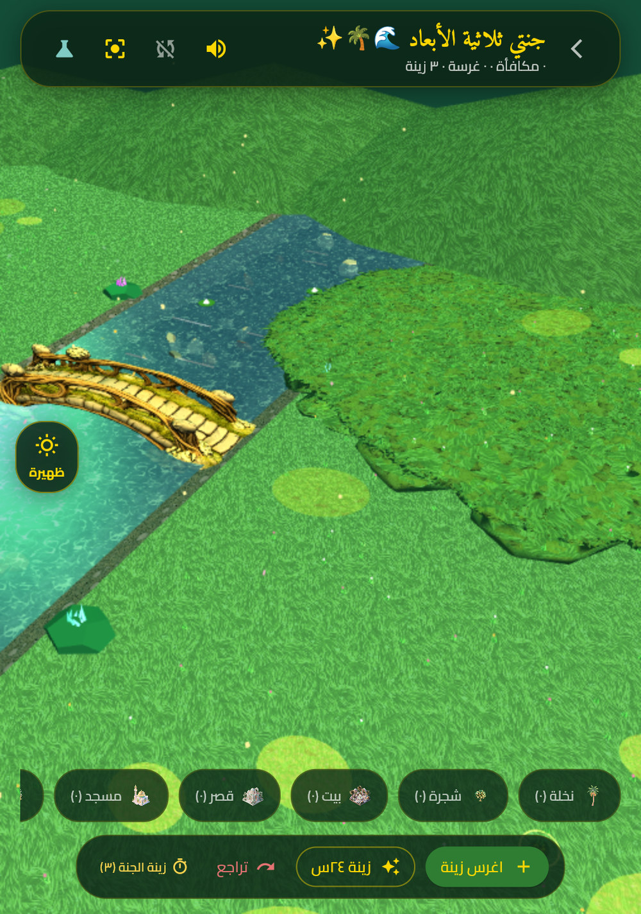
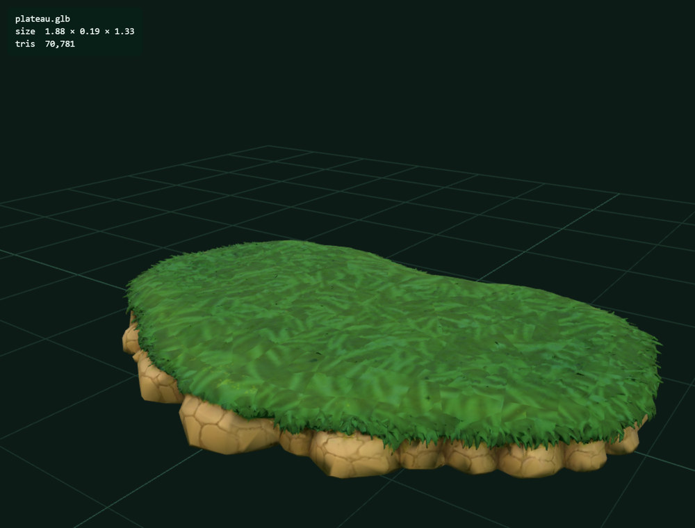
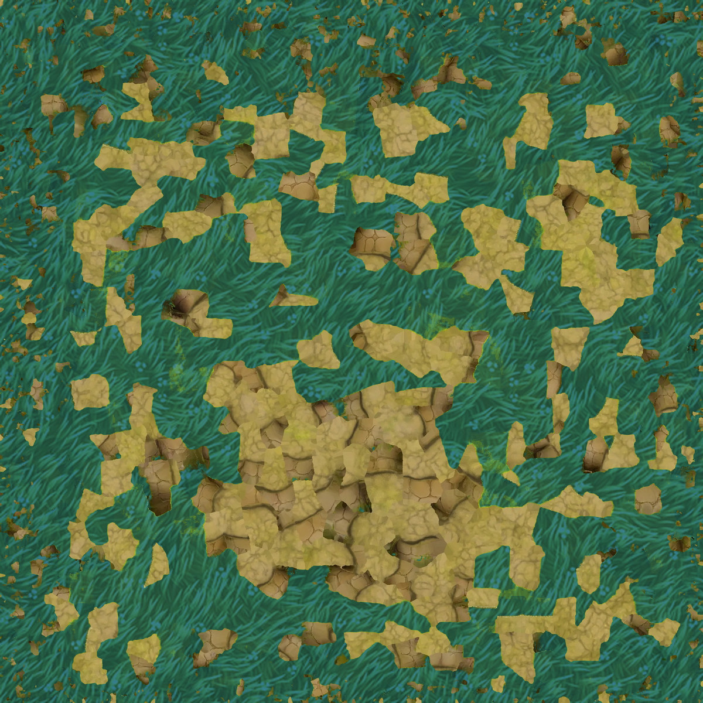
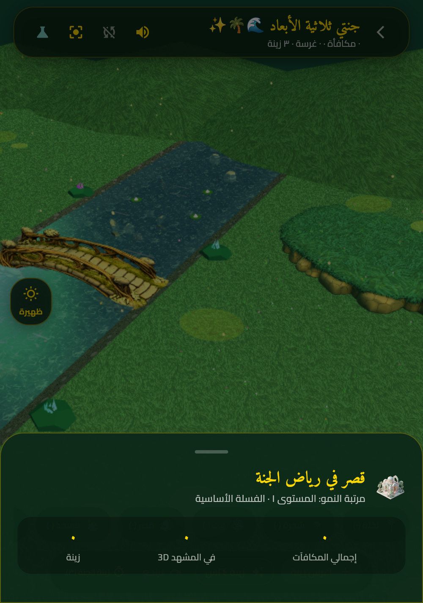
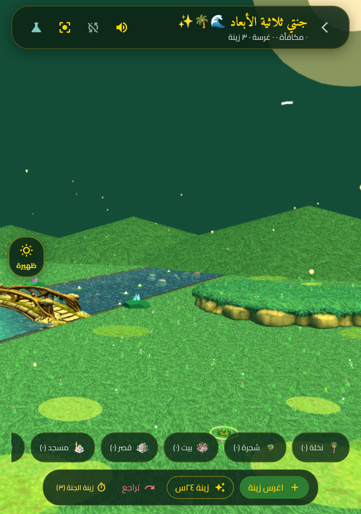

جَنَّتِي · سجل تطوّر المشهد · المرحلة ٢
الهضبة: من قرص مسطّح إلى جرف
١٢–١٣ نوفمبر ٢٠٢٦ — رفع الهضبة الوسطى إلى مجسّم حقيقي دون المساس بمواضع الزرع ولا بانحناءات المرج.

المشكلة قبل المرحلة
الهضبة كانت أسطوانة إجرائية وقرصًا أخضر: شكل هندسي صريح، لا جرف ولا حصى، ويظهر ككعكة عشب في وسط الجزيرة.
القرارات
-
المقياس النهائي
42.9 × 4.34 × 30.4موحّدًا (نسبة الأصل ١٫٨٨:١٫٣٣)، لا تمطيط. التمطيط كان يفسد اتجاه حراشف العشب ويحوّل الجرف إلى شريط. -
سطح المشي
_kPlateauHeight = 4.08لا ٤٫٣٤. القياس: الوسيط ٤٫٠٧ وp99 عند ٤٫١٩، فالـ٤٫٣٤ هو رؤوس العشب لا الأرض. أي موديل يُزرع عند ٤٫٣٤ يطفو فوق السطح. -
اللون يُطبخ داخل الخامة (
MEADOW_TINTومادة بيضاء). تعديل لون المادة يضرب الصورة كلها فيمحو تفاصيل الجرف الرملي. -
TILE = 2في الصورة نفسها لا في UV — التكرار في UV يخلق حدودًا مرئية عند الحواف المستديرة. - JPEG بجودة ٩٠ للخامة الكبيرة: ٠٫٩٤ م.ب بدل ٢٫٩ م.ب بلا فرق مرئي.
اللقطات

assets/هضبة.glb كما وصل — ١٫١٨ مليون مثلث.













الدرس: «الشكل صحيح» و«الخامة صحيحة» مسألتان منفصلتان. أول
تمريرة أنقذت الهندسة وأضاعت الصورة، والحل كان طبخ اللون في الأطلس لا في المادة.